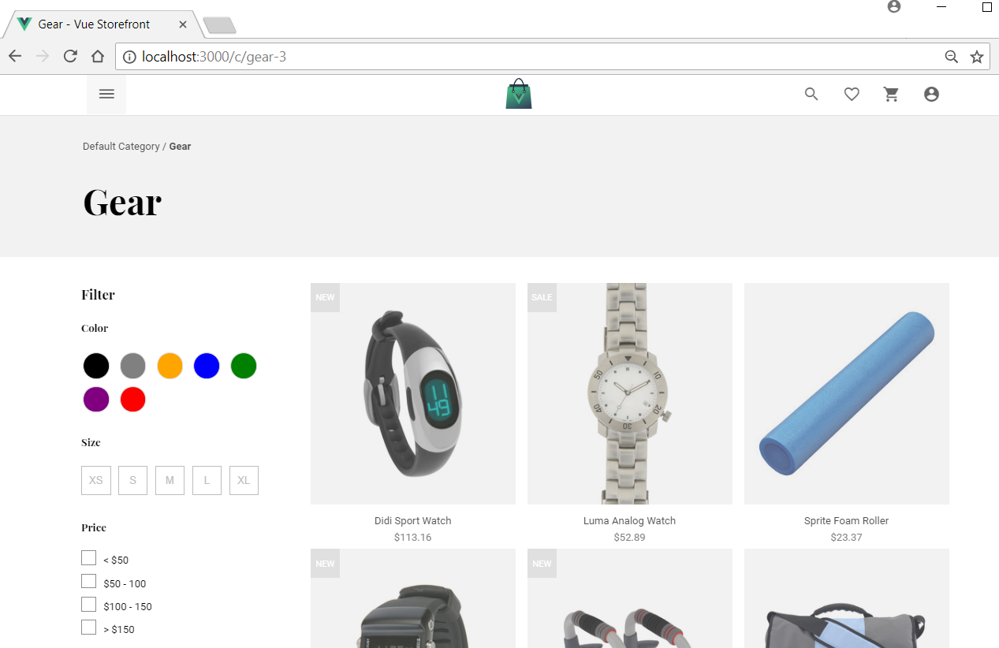
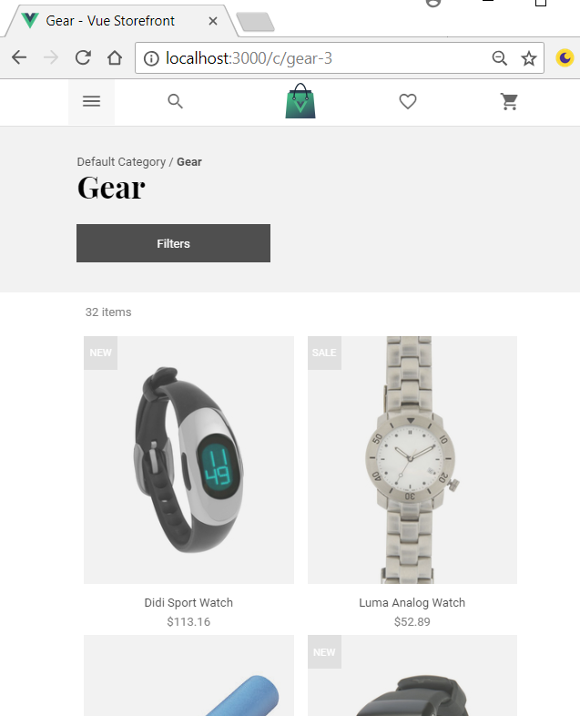
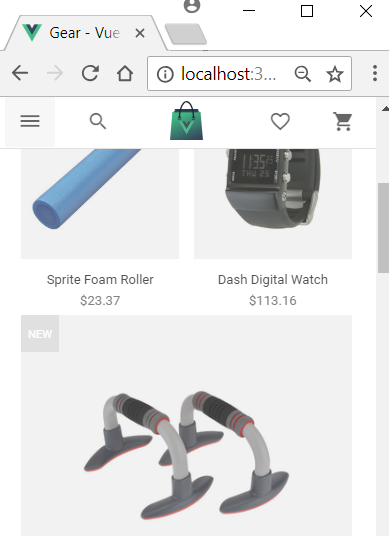

Vue Storefront installation on Windows Dev box
Posted on May 15, 2018 in DevOp Updated: August 18, 2018
Vue Storefront will soon be out (june 2018). It is a PWA frontend to the Magento webshop.
I think I'll give it a testdrive.
I am attending a online marketing seminar and workshop presented by Thomas Zacchi (@tzacchi) from intoto digital, so I could use a modern webshop to play with.
Initial thoughts about installation
I think I'll deploy Magento to a cheap PHP webhotel I have and then at another time roll it out as a Docker container.
bitnami/magento/ looks good for test - it proposes a data volume with MariaDB.
Vue Storefront could just as well be served from the same container as Magento.
But hey - I won't need it neither front nor back deployed - I only want to play. Then instead I'll serve it in MiniShift from my PC.
Got a little wiser
In the article "Magento2 - NoSQL database and PWA support" Piotr Karwatka (@piotrkarwatka) explains there is a little more the setup than a Vue frontend and a Magento backend.
There seems to be two chains that works something like
- OLTP chain: VueFront -> ExpressApiBack -> ElasticSearch or MongoDB container
- Sync with Magento chain: KueWorker -> KueBack(Redis) container -> Mage2VueFront -> ElasticSearch or MongoDB <-> Magento DB
The model of VueFront the data apparently is great for NoSQL storage and querying, which supposedly scales better than the models used in SQL (which the Magento DB uses).
So I guess we for the dev envir again are down to three containers:
- Vue apps: VueFront, ExpressApiBack, KueWorker, Mage2VueFront
- Vue storage: Redis, ElasticSearch or MongoDB
- Magento app, Magento DB
If we for a quick start skip the sync chain, then data can be fetched from magento2-sample-data
Let's see if that is doable.
Installing on Windows
Prerequisites
- Install Git for Windows - This will install
Git Bash- Optional Install cUrl CLI on Windows - This will ensure that you can call a remote end over SSL
- Install Docker CE for Windows.
- I installed Docker4Win here
- Moore info: Running Docker containers on Bash on Windows
- If you use VS Code you could install Docker Support for VSCode
- Install NVM for Windows, Node.js and Yarn
- Install vue-cli
# print installed node versions
nvm list
# At time of writing vue-cli 3 is still in beta, so I choose an old one
#nvm install 8.11.1
nvm use 8.11.1
npm install -g vue-cli@2.9.3
vue --version
# Test drive
vue list
cd .\your-vue-root\
vue init webpack-simple my-29project
cd my-29project
code . #if you are using VS Code editor
npm install
npm run dev # Opens http://localhost:8080/
# When vue-cli 3 comes out I want to have that cli together with another node version - notice - the cli changed name @npm
#nvm install 10.1.0
nvm use 10.1.0
npm install -g @vue/cli@3.0.0-beta.10
vue --version
# Test drive
cd .\your-vue-root\
vue create my-30project
1. v2.9.3 [vue-cli](https://github.com/vuejs/vue-cli/tree/master) intro
2. v3.0. [@vue/cli](https://github.com/vuejs/vue-cli/blob/dev/docs/README.md#introduction) intro
- If you use VSCode you could install Vetur - Vue tooling for VSCode for syntax highlight and snippets
- If you use Chrome you need Vue.js devtools for debugging
- The devtools has Open in editor button to bring you back to the code. check out What’s new in Vue Devtools 4.0, which also points you to this setup guide
Install Vue Storefront
There are two parts
- the Express API including a Docker container for the data
- the Vue frontend
VS API
- Start Docker VM by double-click on the desktop icon. This takes a while
- Install VS API
From GitBash:
cd .\your-vue-root\
git clone https://github.com/DivanteLtd/vue-storefront-api.git vue-storefront-api
cd vue-storefront-api
# Fetch dependencies
yarn
- Load you docker VM with containers from docker-compose.yaml
From CMD prompt:
# login to docker - this did not work from GitBash, but did from CMD
docker login -u yourUseridNotYourEmail -p yourPassword
# Run Docker containers required by vue-storefront-api. This can take a while ...
docker-compose up
# this CMD promt won't return the promt. It is probably a Daemon now, so switch back to GitBash
- Load the Docker data containers with data
From GitBash:
# Verify that the containers are running
docker network ls
# Open browser for Elastic Search (es1) container
start http://localhost:9200/
# Restore products database (yarn restore) and run latest migrations (yarn migrate)
yarn restore
yarn migrate
- Copy
config/default.jsontoconfig/local.json - Add ..vscode\launch.json to the project
- Edit package.json - change:
"scripts": {
"dev": "nodemon -w src --exec \"babel-node src --presets es2015,stage-0\"",
to (add --inspect)
"scripts": {
"dev": "nodemon --inspect -w src --exec \"babel-node src --presets es2015,stage-0\"",
- Run API using
yarn dev - Verify API is running
start http://localhost:8080/api/
Response:{"version":"0.1.0"} - Debug the API from VSCode by setting breakpoints and press
play Attachon the Debug tab.
VS Frontend
- Install VS API
From GitBash 2:
cd .\your-vue-root\
git clone https://github.com/DivanteLtd/vue-storefront.git vue-storefront
cd vue-storefront
# Fetch dependencies
yarn install
- Copy
config/default.jsontoconfig/local.json - Images: because vue-storefront-api uses
imagemagickand some nodejs cmdline bindings it can be dificult to run the image proxy on localhost/windows machine. Please point out the vue-storefront to image proxy provided by changingconfig/local.jsonimages.baseUrl:
export default {
elasticsearch: {
httpAuth: '',
host: 'localhost:8080/api/catalog',
index: 'vue_storefront_catalog'
},
// we have vue-storefront-api (https://github.com/DivanteLtd/vue-storefront-api) endpoints below:
orders: {
endpoint: 'localhost:8080/api/order/create'
},
images: {
baseUrl: 'https://demo.vuestorefront.io/img/'
}
}
- Run Vue Storefront Server using
yarn dev - Verify Fronteend is running
start http://localhost:3000/
You will see a PWA webshop 
The shop is reponsive

And images resizes to small, when devices are very small

Turn off Vue Storefront
- Frontend - in GitBash-2 is just a PWA server - there is nothing to save - just
Xit - API - in GitBash-1 is just an API server - there is nothing to save - just
Xit - Now what about the CMD and the VM? You need to tell the containers in the VM to close down and then close down the VM.
- Start a new GitBash-3
# Verify containers are there
docker container ls
Output:
CONTAINER ID IMAGE COMMAND CREATED STATUS PORTS NAMES
fcd38fe4910e kibana:5.5 "/docker-entrypoint.…" 2 hours ago Up 2 hours 0.0.0.0:5601->5601/tcp vue-storefront-api_kibana_1
070f93cc3a08 redis "docker-entrypoint.s…" 2 hours ago Up 2 hours 0.0.0.0:6379->6379/tcp vue-storefront-api_redis_1
a3fec0cc4f2b elasticsearch:5.5 "/docker-entrypoint.…" 2 hours ago Up 2 hours 9200/tcp, 9300/tcp vue-storefront-api_es2_1
56caf26862c4 elasticsearch:5.5 "/docker-entrypoint.…" 2 hours ago Up 2 hours 0.0.0.0:9200->9200/tcp, 9300/tcp es1
Hmm - this is part of the ELK Stack: Elasticsearch, Logstash, Kibana and the Redis needed for sync with Magento is also there, so perhaps it is ready to connect to a real Magento installation.
cd .\your-vue-root\
cd vue-storefront-api
# Turn off the containers
docker-compose stop
Output:
Stopping vue-storefront-api_kibana_1 ... done
Stopping vue-storefront-api_redis_1 ... done
Stopping vue-storefront-api_es2_1 ... done
Stopping es1 ... done
The CMD promt will display this, so you can close it.
redis_1 | 1:signal-handler (1526416098) Received SIGTERM scheduling shutdown...
redis_1 | 1:M 15 May 20:28:18.957 # User requested shutdown...
redis_1 | 1:M 15 May 20:28:19.142 * Saving the final RDB snapshot before exiting.
es2_1 | [2018-05-15T20:28:19,274][INFO ][o.e.n.Node ] [J8Lto-u] stopping ...
es1 | [2018-05-15T20:28:19,271][INFO ][o.e.n.Node ] [sH31WJW] stopping ...
redis_1 | 1:M 15 May 20:28:19.306 * DB saved on disk
redis_1 | 1:M 15 May 20:28:19.306 # Redis is now ready to exit, bye bye...
es1 | [2018-05-15T20:28:19,444][INFO ][o.e.n.Node ] [sH31WJW] stopped
es1 | [2018-05-15T20:28:19,444][INFO ][o.e.n.Node ] [sH31WJW] closing ...
es2_1 | [2018-05-15T20:28:19,473][INFO ][o.e.n.Node ] [J8Lto-u] stopped
es2_1 | [2018-05-15T20:28:19,473][INFO ][o.e.n.Node ] [J8Lto-u] closing ...
es1 | [2018-05-15T20:28:19,509][INFO ][o.e.n.Node ] [sH31WJW] closed
es2_1 | [2018-05-15T20:28:19,509][INFO ][o.e.n.Node ] [J8Lto-u] closed
vue-storefront-api_es2_1 exited with code 143
vue-storefront-api_redis_1 exited with code 0
vue-storefront-api_kibana_1 exited with code 143
es1 exited with code 143
- Optionally Close Docker from the taskbar-notification-icon: Select
Quit
Startup scripts
I've created three scripts that does the above startup.
You can put them in \your-vue-root\ and just double-click on them to start up VueStorefront. They are:
- vsapi1.bat
- vsapi2.sh
- vs3.sh
Note:
- You must set Git Bash to open extension .sh for this to work
- You must start them in above order and wait patiently for each part to start before you continue with the next script
Whats next?
- You can customize your frontend theme and change the behavior (code)
- You can install Magento at some host and configure your shop to go towards it
- You can deploy your shop
Links
Vue Storefront
4 - Vue Storefront - People
- vuestorefront.slack.com
- Vue Storefront (@VueStorefront) | Twitter
- Piotr Karwatka (@piotrkarwatka) | Twitter
- Filip Rakowski (@filrakowski) | Twitter
1 - Vue Storefront - Events
- 2018 May Vue Storefront Hackathon, 1.0 STABLE, case studies – Piotr Karwatka – Medium
- 2018 May Wro Open Source 2018
2 - Vue Storefront - Github issues
3 - Vue Storefront - Learn
- eBook (2018, 122 pages): Microservices Architecture for eCommerce
- Vue Storefront - YouTube
- Blog: -> 2018.01.31 Vue Storefront — how to install and integrate with Magento2
- Blog: 2018.01.04 How to connect 3rd party platform to Vue Storefront?
-
Slides: 2018.02.26 Vue Storefront Basics - Why we created Vue Storefront and how it works
-
vue: PWA front, Magento back DivanteLtd/vue-storefront
- Installing on Windows
- Installing on Linux and MacOS
- Magento2 - NoSQL database and PWA support
- FAQ and Receipes
- Project structure
- Config file format for vue storefront
- More docs...
Vue
Vue Libs
Vue - Learn
Other
- front-end-performance-checklist-2018.pdf
- SEO and PWA: 2018 State of PWA
- Other headless / API first apps
- Other ecommerce projects on GitHub
- My list of npm installs locally
OpenShift
- Installing OpenShift
- Deploying to MiniShift
The End